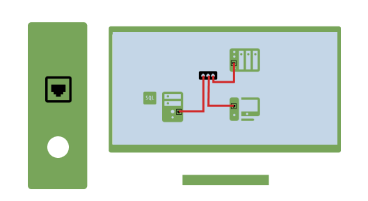

SCADA Integration:
SCADA is a system that allows for real-time monitoring and control of industrial processes. In the context of recipe management, SCADA can be used to interact with production equipment, collect data, and provide real-time feedback.
In this project, SCADA will be integrated to facilitate the following functionalities:
- Equipment Control: SCADA will enable the control of various equipment involved in the recipe management process, such as mixers, ovens, or packaging machines. It will provide the ability to start, stop, adjust parameters, and monitor the equipment's status.
- Data Acquisition: SCADA will gather data from the production line, such as temperature, pressure, or ingredient measurements. This data will be utilized for recipe monitoring, quality control, and process optimization.
- Alarm and Event Handling: SCADA will generate alarms or notifications based on predefined thresholds or critical events. For example, if a temperature exceeds a specified limit, an alarm can be triggered to alert operators or take automated actions.
SQL Integration:
SQL is a database management language used to store, retrieve, and manipulate data in relational databases. In the recipe management system, SQL will be employed to store and manage recipe data, production logs, and other relevant information.
The SQL integration will provide the following capabilities:
- Recipe Storage: Recipes will be stored in an SQL database, allowing for easy access, retrieval, and modification. Each recipe will contain details such as ingredients, quantities, preparation steps, and associated parameters.
- Recipe Versioning: SQL databases enable version control, allowing for multiple versions of a recipe to be stored. This feature enables easy tracking and management of recipe changes over time.
- Data Logging and Analysis: The system can log production data, including batch details, timestamps, and process parameters, into an SQL database. This data can be later analyzed for quality control, performance evaluation, and process improvement.
- Reporting and Analytics: SQL queries and reporting tools can be utilized to generate insightful reports and analytics based on the stored recipe and production data. This helps in identifying trends, optimizing recipes, and making data-driven decisions.
Overall, the integration of SCADA and SQL technologies in the recipe management system provides a comprehensive solution for efficient recipe creation, real-time monitoring, equipment control, data acquisition, and data analysis. It enhances productivity, quality control, and decision-making capabilities in the production environment.

SCADA
SCADA is a system that allows for real-time monitoring and control of industrial processes.

SQL
SQL is a database management language used to store, retrieve, and manipulate data in relational databases.